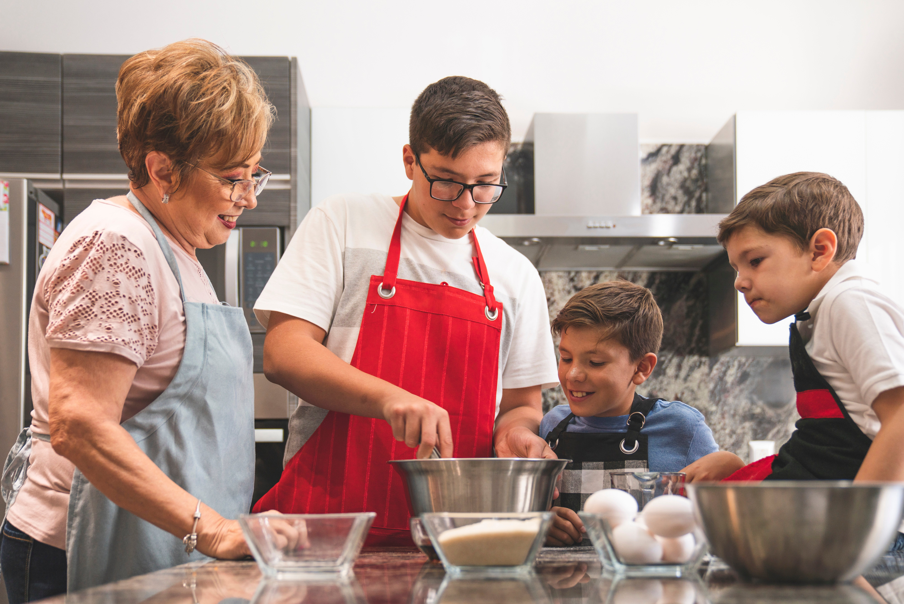

<div class="flex place-content-center bg-base-200">
<article class="prose">
    <h1>About Me</h1>
    <h2>Introduction:</h2>
    <p>
    Greetings to Kay's Confections, a manifestation of a grandmother's devotion.
    We are renowned for our fresh and inventive designs, dedicated to producing
    cakes and desserts in smaller batches with an unwavering commitment to higher quality.
    </p>

            <h2>How It All Began</h2>
            <p>
            Let's rewind the clock to when I first became a grandmother—the starting point for Kays Confections.   
            It all began with the simple joy of family gatherings and the desire to make those moments even
            sweeter. As I navigated the delightful chaos of grandparenthood, a passion for crafting delicious
            desserts sprouted naturally. Kays Confections emerged from these humble beginnings, a small venture
            fueled by the love that defines family and the simple pleasures of homemade treats.
            </p>
            <!--  -->
    <h2>The Kay's Confections Experience</h2>
    <p>
        When you choose Kay's Confections, you're not just ordering desserts;
        you're inviting a piece of our passion into your celebrations.
        From the finest ingredients to the meticulous craftsmanship,
        each creation is a reflection of our dedication to exceeding your expectations.
    </p>
    <h2>Contact Me</h2>
    <p>
        Feel free to reach out to us with any questions, suggestions, or just to say hello.
        I love hearing from customers!
    </p>
  </article>
</div>